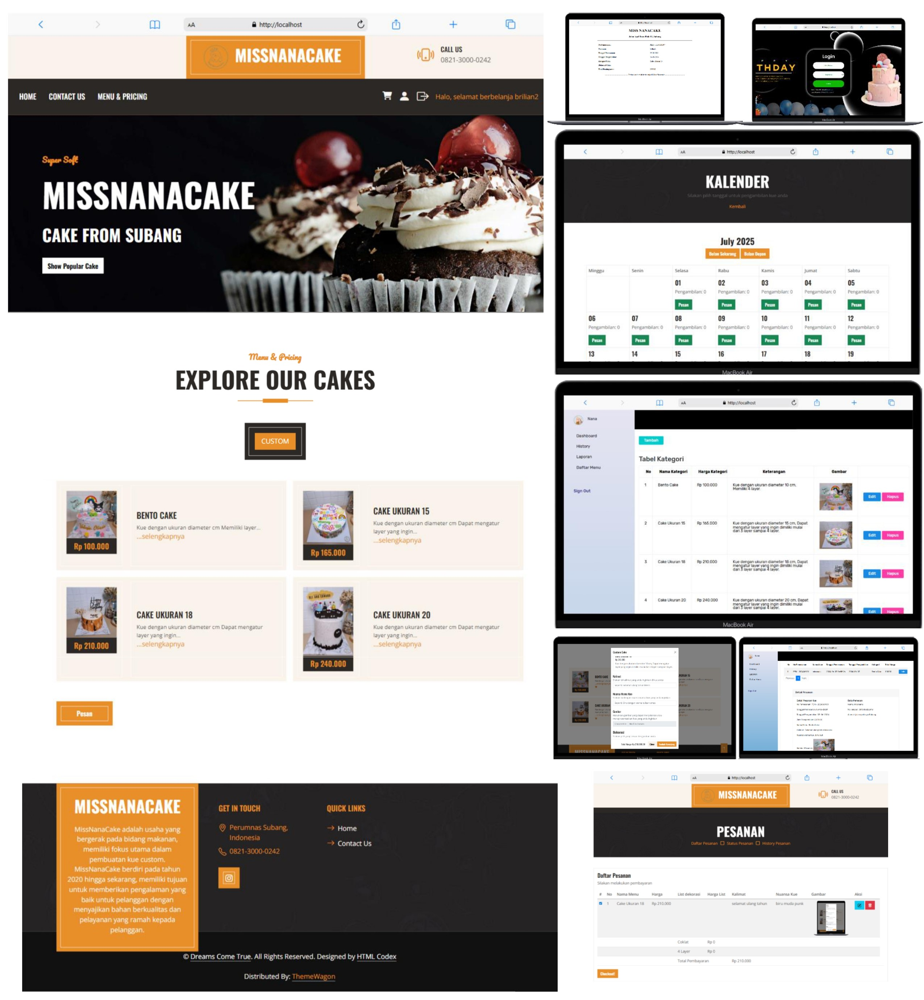
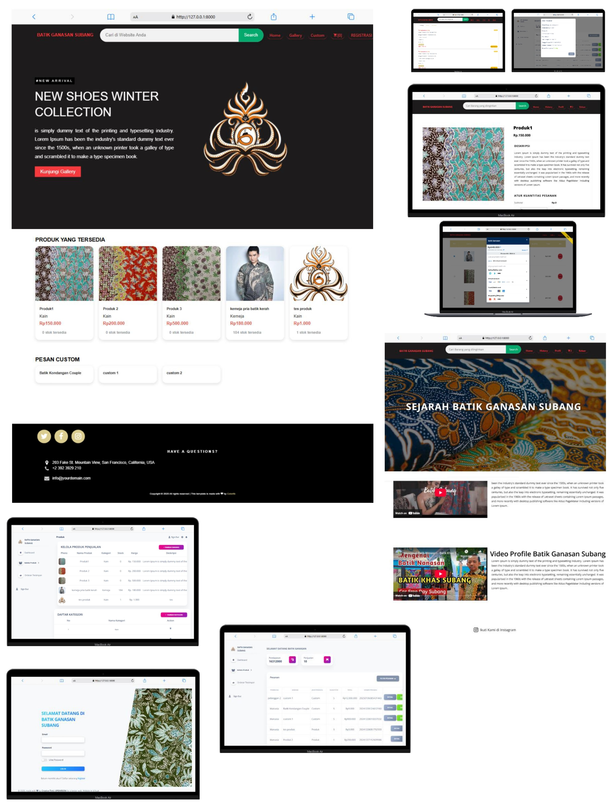
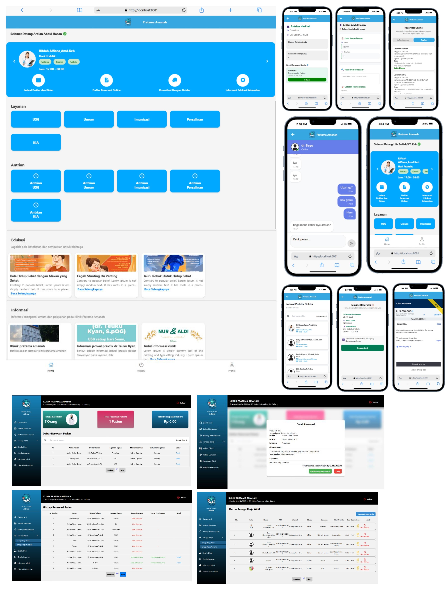

🔰Anggota Pramuka (2017-2019)
🔰Pratama Putra (2019-2020)
🔰Anggota Jurnalistik (2020-2021)
🔰Humas Jurnalistik (2021-2022)
🔰Anggota Biro Kominfo (2023-2024)

Website ini merupakan sistem pencatatan dan mengelolaan serta penjualan yang ditujukan pada UMKM toko kue Missnana Cake, Subang. Dalam sistem ini terdapat beberapa fitur seperti penjadwalan operasional pada toko, pencatatan pemasukan, pengelolaan produk, cetak struk transaksi dan pengelolaan stok barang, history pemesanan, keranjang, pengelolaan profile serta pemesanan produk yang dapat dilakukan dengan pembelian secara online.

Website ini merupakan sistem pencatatan dan mengelolaan serta penjualan yang ditujukan pada Batik Ganasan Subang, Subang. Dalam sistem ini terdapat beberapa fitur seperti penghitungan otomatis pemasukan dan history penjualan, pengelolaan produk custom maupun non custom serta pengelolaan kategori pada masing masing jenis batik, cetak struk transaksi dan pengelolaan stok barang, history pemesanan, keranjang, pengelolaan profile, pembayaran secara online menggunakan midtrans serta pemesanan produk yang dapat dilakukan dengan pembelian secara online.

Sistem ini merupakan sistem yang berbasis Aplikasi untuk mobile dan website untuk desktop dengan 4 role yang tersedia yaitu: Dokter, Bidan, Pasien, Admin. Penggunaan perangkat mobile di peruntukan untuk pasien, dokter dan bidan sedangkan untuk desktop diperuntukan untuk admin. Reservasi dan rekam medis yang ditujukan pada Klinik Pratama Amanah, Subang. Dalam sistem ini terdapat beberapa fitur seperti pengelolaan jadwal dokter, pengelolaan obat, pengelolaan layanan, pengelolaan artikel edukasi kehamilan, pengelolaan rekam medis pasien, history reservasi, profile user, lupa katasandi, pembayaran secara online menggunakan midtrans, konsultasi online melalui live chat, informasi mengenai nomor antrian dan informasi mengenai jadwal praktik dokter
{kind=link}
{kind=link}
{kind=link}